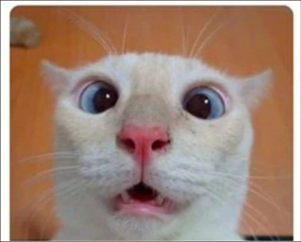

Ser feliz sem motivo é a mais autêntica forma de felicidade.
Saber encontrar a alegria na alegria dos outros é o segredo da felicidade.
A alegria de fazer o bem é a única felicidade verdadeira.
Pessimismo leva à fraqueza, otimismo ao poder.
O otimismo é a fé em ação. Nada se pode levar a efeito sem otimismo.
Pedras no caminho? Eu guardo todas. Um dia vou construir um castelo
A alegria evita mil males e prolonga a vida.
A amizade duplica as alegrias e divide as tristezas.
O segredo da felicidade é encontrar a nossa alegria na alegria dos outros.
Otimismo é esperar pelo melhor. Confiança é saber lidar com o pior.
H2O
H2O
A sabedoria começa na reflexão.
& § ™ ¶
😁 😂 😅 🗼